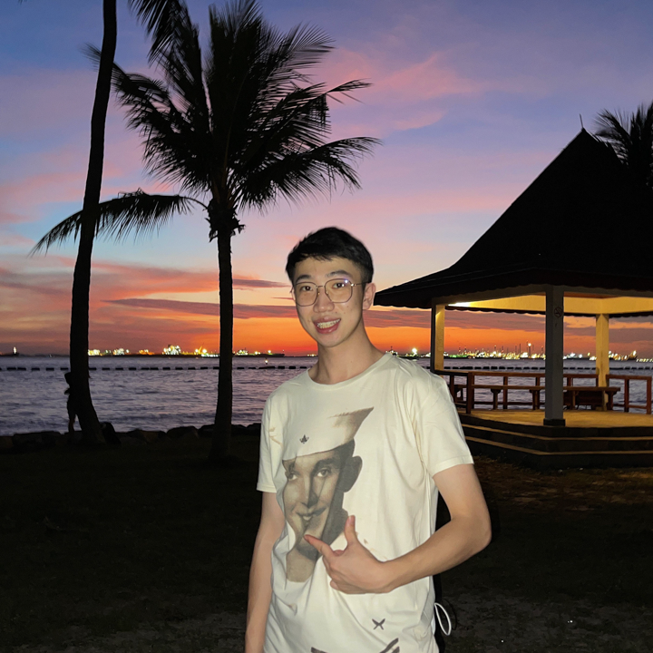
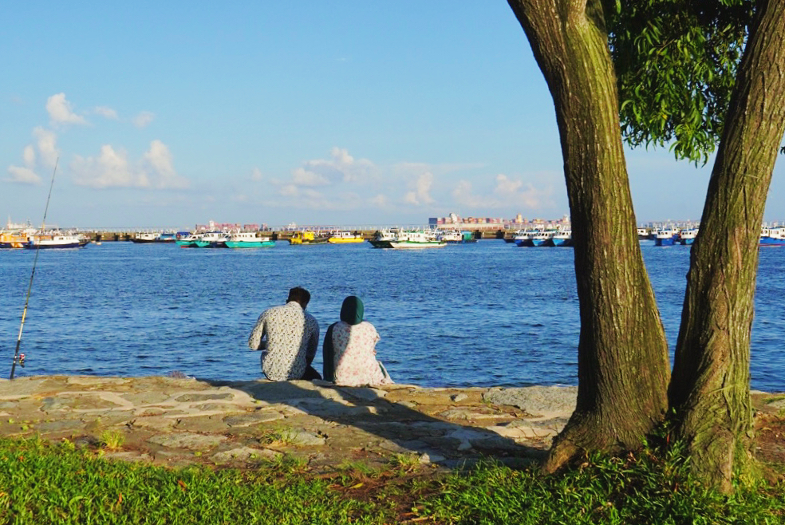
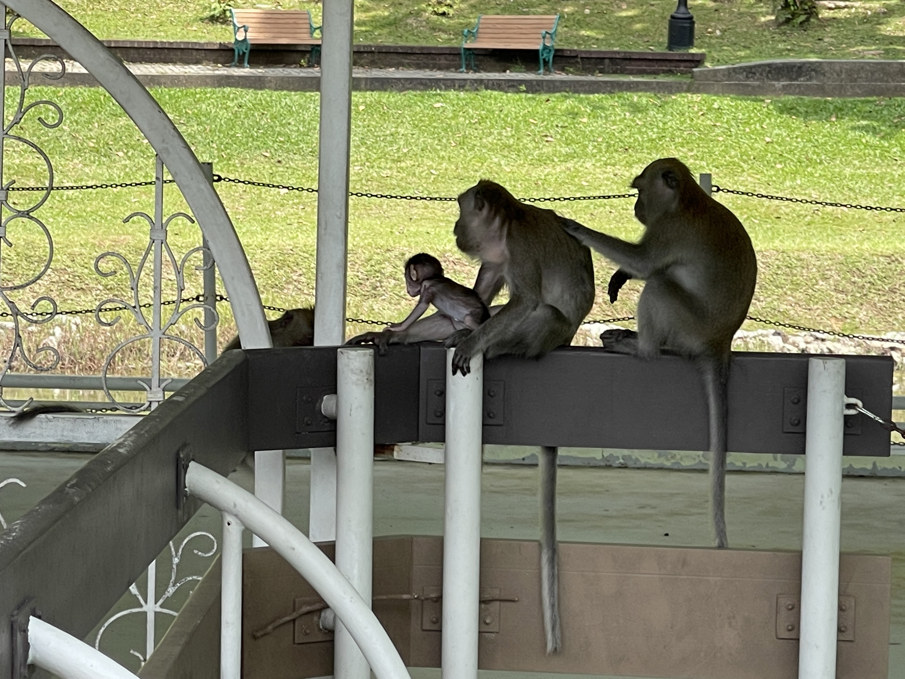
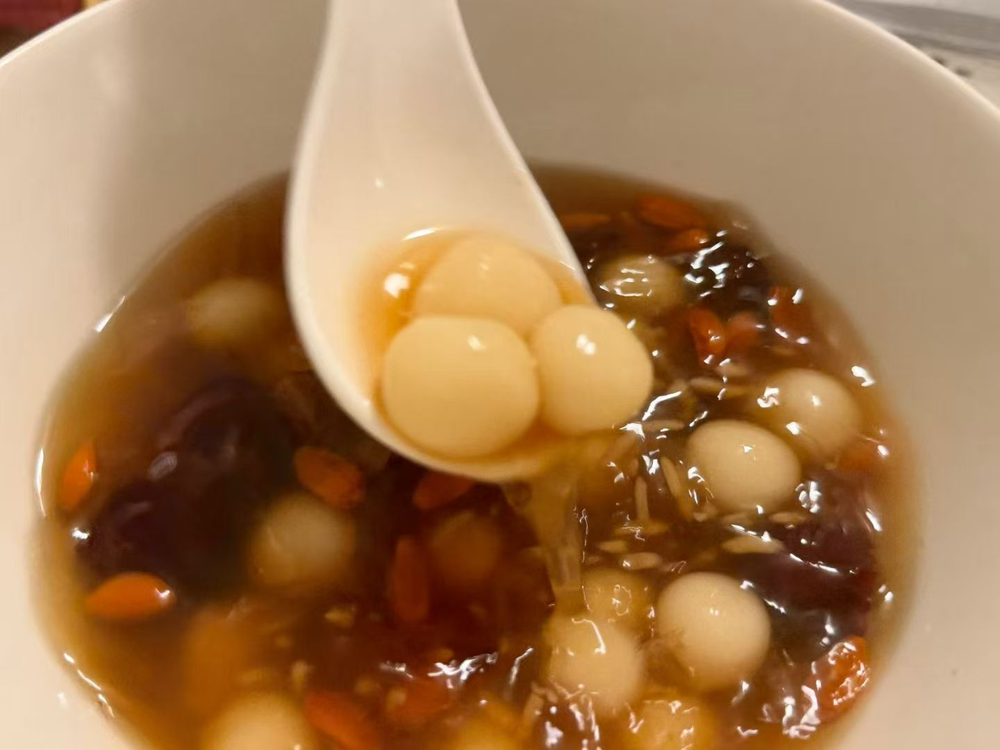
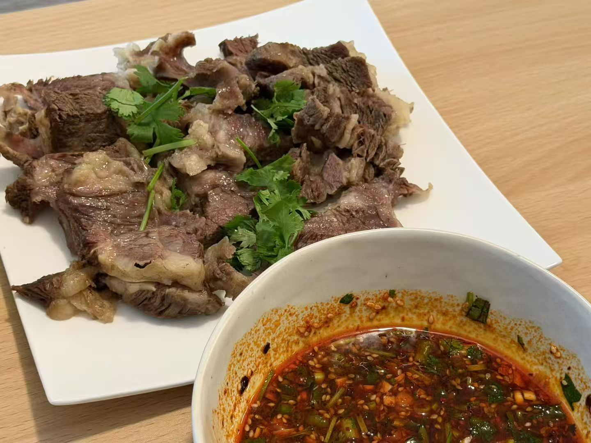
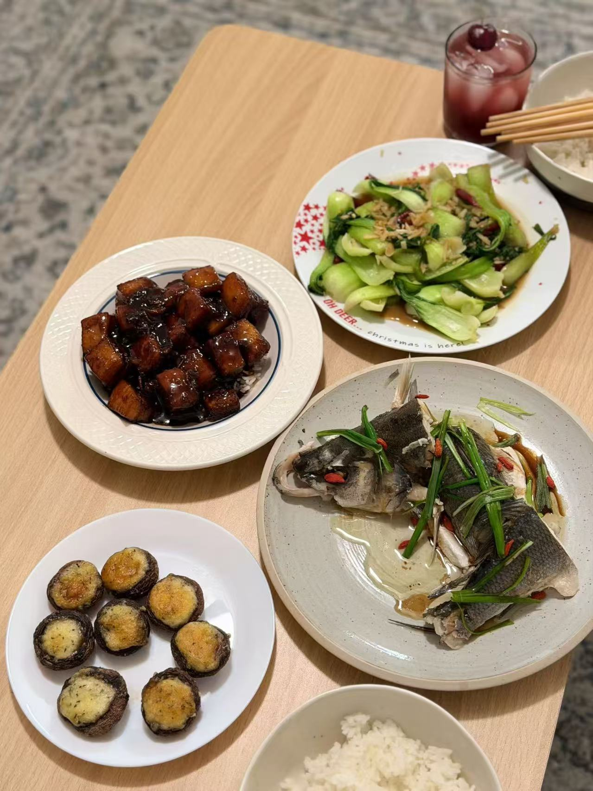
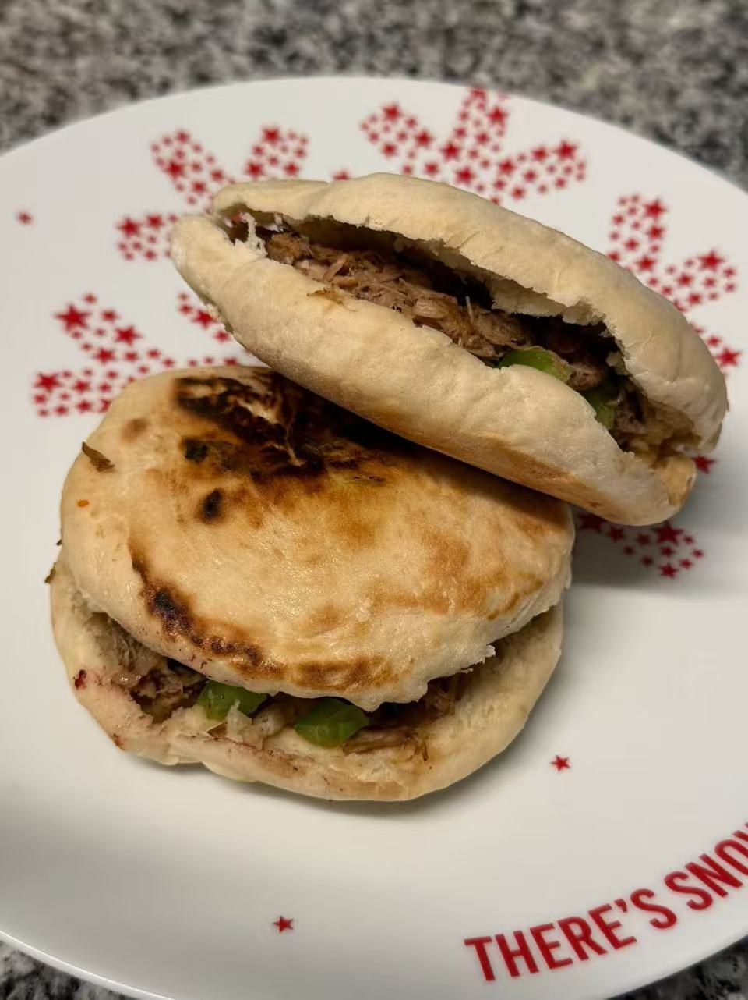
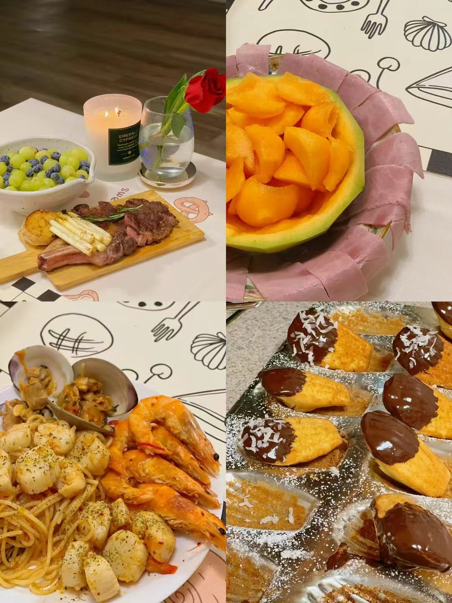
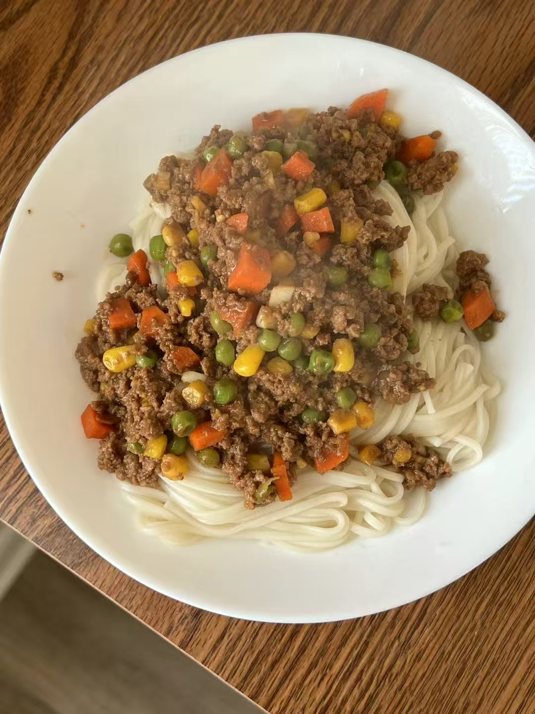

Di Yang 杨迪
I am a Ph.D. student in Data Science at The College of William & Mary, supervised by Dr. Yanhai Xiong. Currently, I am also a Research Intern at SparcAI Inc. (mentored by Dr. Yufei Wang). Previously, I received my M.Sc. in Electrical Engineering from National University of Singapore (NUS) (advised by Dr. John S. Ho) and B.Eng. in Microelectronic Science and Engineering from University of Electronic Science and Technology of China (UESTC).
Prior to my Ph.D., I worked as a Digital Logic Engineer at Cambricon Technologies on large-scale AI accelerator hardware verification. My research focuses on Multimodal Learning, Vision-Language-Action (VLA) Policies, World Models, Multi-Agent Systems, and Few-Step Generative Modeling.

News & Updates
Research Interests
VLA & Embodied Manipulation
Integrating metric spatial representations (robot-centric point maps) into 5B VLA policies for real-world robotics and physical manipulation.
World Models & 3D/4D Worlds
Generative spatiotemporal world models and next-generation 4D state representations capturing physical environment dynamics.
Multi-Agent Systems & Simulation
Decentralized multi-agent pathfinding under partial observability (LENS, TMLR) and realistic 3D simulation platforms (UP-Bench, KDD Oral).
Few-Step Generative Modeling
Continuous-time consistency distillation, second-order flow matching (VTV-FM), and custom JVP FlashAttention kernels for 3D generation (Channel Match).
Selected Publications
@article{yang2026lens,
title={LENS: Learning to Navigate with Active Search for Partially Observable MAPF in Unknown Environments},
author={Yang, Di and others},
journal={Transactions on Machine Learning Research},
year={2026}
}
@inproceedings{yang2025upbench,
title={UP-Bench: A Benchmark for Underwater Path Planning Algorithms},
author={Yang, Di and Xiong, Yanhai},
booktitle={Proceedings of the 31st ACM SIGKDD Conference on Knowledge Discovery and Data Mining},
year={2025}
}
@article{li2026hyco,
title={HyCO: A Hybrid Neural Solver for Combinatorial Optimization},
author={Li, Y. and Yang, Di and Chen, H. and Xiong, Y.},
journal={arXiv preprint arXiv:2609.07990},
year={2026}
}
@article{yang2026channelmatch,
title={Channel Match: Calibrating Shape Latents for Few-Step 3D Generation},
author={Yang, Di and Li, Z. and Xiong, Y. and Wang, Y.},
journal={Under Review},
year={2026}
}
@article{jiang2026vtvfm,
title={VTV-FM: Flow Matching through Variational Terminal-Velocity Closure},
author={Jiang, H. and Li, Y. and Yang, Di and Xiong, Y. and Chen, H. and He, Y.},
journal={Under Review},
year={2026}
}
Selected Research & Industry Experience
- VLA Policy Manipulation: Integrating robot-centric point maps into a 5B VLA policy for metric spatial manipulation; built OmniGibson/BEHAVIOR pipelines with failure-case data augmentation.
- Channel Match (Few-Step 3D Distillation): Distilled a native 3D generator to 2 steps with continuous self-consistency (4.5× faster shape sampling); implemented a custom Triton JVP FlashAttention kernel.
- HyCO: Designed RL-to-diffusion handover for combinatorial optimization; reduced TSP-1000 optimality gap from 15.4% to 4.6% (NeurIPS 2026 Under Review, arXiv:2609.07990).
- LENS & UP-Bench: Proposed LENS (TMLR Accepted) for partially observable MAPF; designed UP-Bench (KDD 2025 Oral) 3D underwater simulation benchmark.
- VTV-FM: Co-developed second-order phase-space flow matching with variational terminal-velocity closure (NeurIPS 2026 Under Review).
Education
Life & Gallery









🏀 Basketball
Court vision, spacing, and team chemistry.
🚵♂️ Downhill Biking
Speed, precision lines, and mountain flow.
🧗♂️ Rock Climbing
Physical problem solving, beta reading, and grip strength.
Visitor Analytics & Global Reach
Tracking academic engagement and visitor distribution across the world. Click the counter below to view the interactive world map & country-level breakdown: